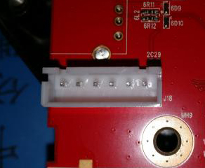
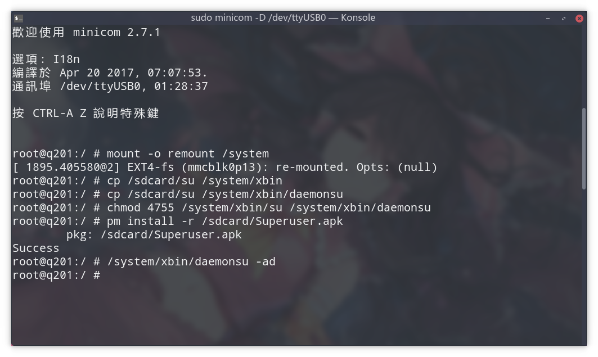
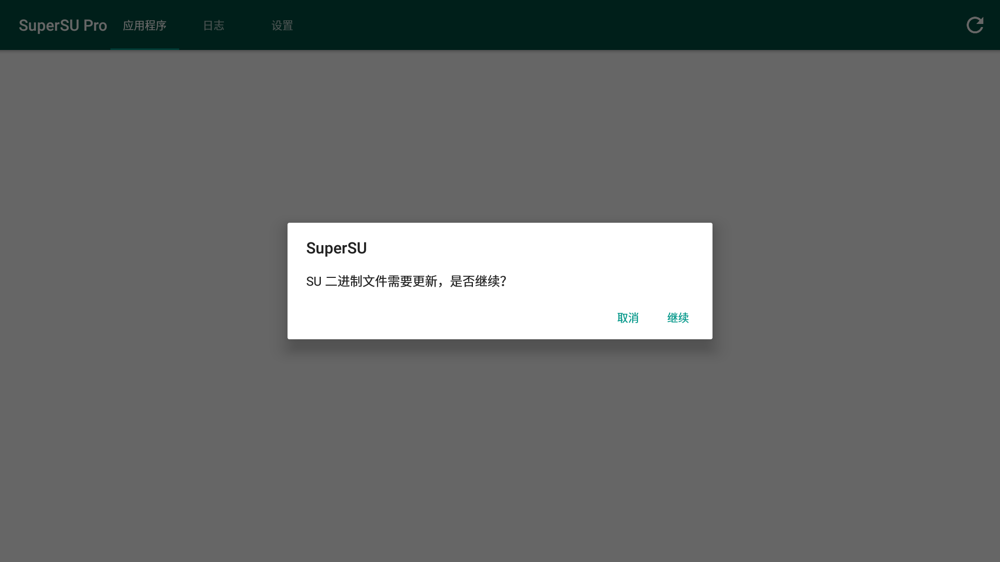

去年过年的时候想买个盒子，买之前在小米盒子3增强版和海美迪H7四代之间犹豫好久，最后花了399大洋买了H7四代（因为听说小米盒子更新成了广告盒子。（再后来发现还不如买个外贸盒子。
到手之后就想把 H7 四代 ROOT 了，adb root 没有开，试了各种工具也不行。网上也没有 root 成功的帖子。论坛的客服也说以后不会开放 root 。当时真是后悔死啦。
后来在逛海美迪论坛的时候发现有个拆机 TTL root 其他机型的帖子，想想H7四代也许也可以这样，正好手里有个ch341。就去网上找了四代的拆机图，一看还真有TTL接口。拆！保修是什么？吃了吧，Android不root能玩？（现在已经有方法不用拆机了
然后H7四代就红果果的躺在我面前了，嗯，就像这样。
拿到 root
文中提到一些文件可以到这里下载。
不用拆机的方法
下载 BoxTool3.1.apk ，安装，打开。（如果 Google 提示不能安装，就在系统设置-高级设置-Google-安全性-验证应用程式里面关闭验证,然后再安装。）
用 telnet 连接到盒子。
然后看这个。
拆机 root
如果插了TF卡的话要先拿出来，不然板子会拿不下来（千万不要大力出奇迹，会断的。。。
拆开之后。

TTL线 GND接第一个 TXD接第三个 RXD接第四个
照上图接好 TTL 线之后，用 putty 之类的软件连接到盒子。
然后看这个。
安装 SuperSU
手动安装 SuperSU
把 SuperSU 卡刷包里面的 common/Superuser.apk 、 armv7/su 放到到盒子的 /sdcard ，然后执行
1 | pm install -r /sdcard/Superuser.apk |

这时候打开盒子上的 SuperSU 会提示更新二进制文件，常规方式更新就好了。

如果接上 TTL 的时候不能连电视的话可以在盒子上装个 TeamViewer ，远程过去点确定。
root 完成。
Recovery 刷入 SuperSU
- 把H7四代的 TWRP Recovery 、SuperSU 的卡刷包包放到盒子的 /sdcard 。
- 备份原厂 recovery
dd if=/dev/block/recovery of=/sdcard/stock_recovery.img - 刷入 TWRP
dd if=/sdcard/twrp-q201-3.1.1-0.img of=/dev/block/recovery - 重启到 recovery
reboot recovery - 插上鼠标，刷入 SuperSU 。
- root 完成。